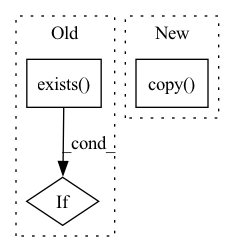

Pattern ID :25405
Before Change
for log in ["info.log", "debug.log", "error.log"]:
log_file = Path(log_dir) / log
if log_file.exists() :
log_file.rename(f"{output_dir}/{log}")
After Change
src = Path(log_dir) / log
dst = Path(output_dir) / log
if src.exists():
shutil.copy( src, dst)
In pattern: SUPERPATTERN
Frequency: 3
Non-data size: 3
Instances Fragment ID: 77622465
Project Name: zumolabs/zpy
Commit Name: 6b6b82764d988a8c0a7f275868fc7c8a69b3cadf
Time: 2021-04-06
Author: nponte@baymax.local
File Name: zpy/logging.py
M Class Name: AnonimousClass
N Class Name: AnonimousClass
M Method Name: save_log_files(2)
N Method Name: save_log_files(2)
M Parent Class:
N Parent Class:
M File Name: zpy/logging.py
N File Name: zpy/logging.py
M Start Line: 108
M End Line: 110
N Start Line: 108
N End Line: 112
Before Change
):
Tests that global config attributes can be overwritten by environment
variables.
if fileio.exists( GlobalConfiguration()._config_file()) :
fileio.remove(GlobalConfiguration()._config_file())
GlobalConfiguration()._reset_instance()After Change
variables.
config = GlobalConfiguration()
original_env = os.environ.copy()
// delete the environment variable that is set at the beginning of all tests
mocker.patch.dict(os.environ, values={}, clear=True)
assert config.analytics_opt_in is True Fragment ID: 77622462
Project Name: maiot-io/zenml
Commit Name: 295778c9c45d2ac912887066d080b8e58020bb86
Time: 2022-05-16
Author: stefan@zenml.io
File Name: tests/unit/config/test_global_config.py
M Class Name: AnonimousClass
N Class Name: AnonimousClass
M Method Name: test_global_config_returns_value_from_environment_variable(2)
N Method Name: test_global_config_returns_value_from_environment_variable(2)
M Parent Class:
N Parent Class:
M File Name: tests/unit/config/test_global_config.py
N File Name: tests/unit/config/test_global_config.py
M Start Line: 44
M End Line: 47
N Start Line: 46
N End Line: 59
Before Change
os.makedirs(dump_path_bkg_masked, exist_ok=True)
os.makedirs(dump_path_person_masked, exist_ok=True)
if os.path.exists( second_style_path) :
second_dir = second_style_path
else:
second_dir = content_picsAfter Change
// prepare canvas imagery
combined_img_background = s_img.copy()
combined_img_person = s_img.copy()
// create masks
background_mask = m_img == 0
person_mask = m_img == 255 Fragment ID: 77622463
Project Name: gordicaleksa/pytorch-naive-video-neural-style-transfer
Commit Name: eb258a320653c1198a40fb422c98f1f37212c8cc
Time: 2020-08-03
Author: gordicaleksa@gmail.com
File Name: segmentation.py
M Class Name: AnonimousClass
N Class Name: AnonimousClass
M Method Name: stylized_frames_mask_combiner(3)
N Method Name: stylized_frames_mask_combiner(3)
M Parent Class:
N Parent Class:
M File Name: segmentation.py
N File Name: segmentation.py
M Start Line: 108
M End Line: 150
N Start Line: 109
N End Line: 156